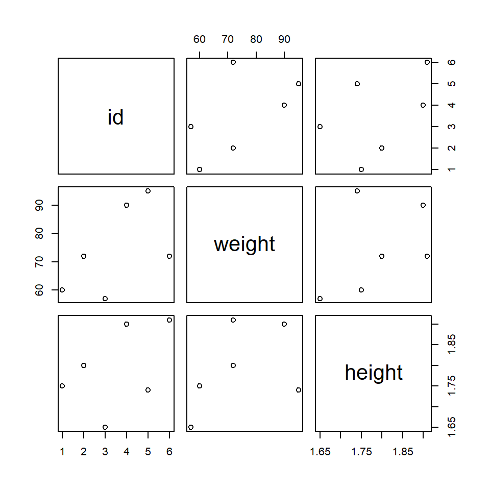

Chapter 3 Data types
3.1 Vectors
Vectors can be created with the concatenate (or combine) function c().
Code
x <- c(6, 3, 2, 8)
x## [1] 6 3 2 8You can use mathematical operations element wise on a vector.
Code
mean(x)## [1] 4.75Code
x + 2## [1] 8 5 4 10Code
sqrt(x)## [1] 2.449490 1.732051 1.414214 2.828427Code
y <- c(2, 4)
x + y # shorter vector is "recycled" or "broadcasted"## [1] 8 7 4 12Code
x + rep(y, 2)## [1] 8 7 4 123.1.1 Creating vectors
Vectors can be created in different ways. All objects within one vector must be of the same type. If they are not, R automatically converts all elements to the most general type.
Often used types of vectors are
- character vectors with their elements in quotation marks
- logical vectors with values
TRUE,FALSEandNA(missing values indicated byNA)
You can check the type with class() or typeof().
Code
c("a", "b", "c", 4, 7.7)## [1] "a" "b" "c" "4" "7.7"Code
seq(1, 2, .1)## [1] 1.0 1.1 1.2 1.3 1.4 1.5 1.6 1.7 1.8 1.9 2.0Code
seq(1, 2, length.out = 10)## [1] 1.000000 1.111111 1.222222 1.333333 1.444444 1.555556 1.666667 1.777778 1.888889
## [10] 2.000000Code
seq(from = 1, to = 5, by = 1)## [1] 1 2 3 4 5Code
seq(1, 4, along.with = x)## [1] 1 2 3 4Code
1:10## [1] 1 2 3 4 5 6 7 8 9 10Code
-5:5## [1] -5 -4 -3 -2 -1 0 1 2 3 4 5Code
rep(1:5, 2)## [1] 1 2 3 4 5 1 2 3 4 5Code
rep(c("a", "b", "c"), each = 3)## [1] "a" "a" "a" "b" "b" "b" "c" "c" "c"Code
rep(c("a", "b", "c"), c(2, 4, 6))## [1] "a" "a" "b" "b" "b" "b" "c" "c" "c" "c" "c" "c"Code
table(rep(c("a", "b", "c"), c(2, 4, 6)))##
## a b c
## 2 4 6Code
rep(1:4, each = 2, times = 3) # length 24, 3 complete replications## [1] 1 1 2 2 3 3 4 4 1 1 2 2 3 3 4 4 1 1 2 2 3 3 4 4Code
rep(rep(1:4, each = 2), 3) # more complicated way## [1] 1 1 2 2 3 3 4 4 1 1 2 2 3 3 4 4 1 1 2 2 3 3 4 4Code
paste("subj", 1:10, sep = "_")## [1] "subj_1" "subj_2" "subj_3" "subj_4" "subj_5" "subj_6" "subj_7" "subj_8"
## [9] "subj_9" "subj_10"Code
weight <- c(60, 72, 57, 90, 95, 72)
height <- c(1.75, 1.80, 1.65, 1.90, 1.74, 1.91)
plot(height, weight, ylim = c(45, 100))
Code
# logical vectors
c(TRUE, FALSE, FALSE, TRUE)## [1] TRUE FALSE FALSE TRUECode
weight > 60## [1] FALSE TRUE FALSE TRUE TRUE TRUECode
sum(weight > 60)## [1] 4Code
mean(weight > 60)## [1] 0.6666667Factors are data structures for categorical variables, such as diagnosis, socio-economic status, sex, etc.
Code
ses <- factor(c("low", "inter", "high"))
ses## [1] low inter high
## Levels: high inter lowCode
ses2 <- factor(ses, levels = c("low", "inter", "high"))
ses2## [1] low inter high
## Levels: low inter highCode
factor(rep(1:2, each = 10), labels = c("on", "of"))## [1] on on on on on on on on on on of of of of of of of of of of
## Levels: on ofCode
# sort factor levels
l <- paste(c("subj", "cond"), rep(1:10, each = 2), sep = "_")
f <- factor(l, levels = l)
f## [1] subj_1 cond_1 subj_2 cond_2 subj_3 cond_3 subj_4 cond_4 subj_5 cond_5 subj_6
## [12] cond_6 subj_7 cond_7 subj_8 cond_8 subj_9 cond_9 subj_10 cond_10
## 20 Levels: subj_1 cond_1 subj_2 cond_2 subj_3 cond_3 subj_4 cond_4 subj_5 cond_5 ... cond_103.2 Matrices
R offers multiple functionalities to work with matrices.
Code
A <- matrix(1:12, nrow = 3, ncol = 4, byrow = TRUE)
A## [,1] [,2] [,3] [,4]
## [1,] 1 2 3 4
## [2,] 5 6 7 8
## [3,] 9 10 11 12Code
rownames(A) <- c("a1", "a2", "a3")
t(A)## a1 a2 a3
## [1,] 1 5 9
## [2,] 2 6 10
## [3,] 3 7 11
## [4,] 4 8 12Code
diag(A)## [1] 1 6 11Code
diag(6)## [,1] [,2] [,3] [,4] [,5] [,6]
## [1,] 1 0 0 0 0 0
## [2,] 0 1 0 0 0 0
## [3,] 0 0 1 0 0 0
## [4,] 0 0 0 1 0 0
## [5,] 0 0 0 0 1 0
## [6,] 0 0 0 0 0 1Code
diag(c(3, 5, 7))## [,1] [,2] [,3]
## [1,] 3 0 0
## [2,] 0 5 0
## [3,] 0 0 7Code
cbind(a1 = 1:4, a2 = 5:8, a3 = 9:12)## a1 a2 a3
## [1,] 1 5 9
## [2,] 2 6 10
## [3,] 3 7 11
## [4,] 4 8 12Code
rbind(a1 = 1:4, a2 = 5:8, a3 = 9:12)## [,1] [,2] [,3] [,4]
## a1 1 2 3 4
## a2 5 6 7 8
## a3 9 10 11 12Code
5 * A## [,1] [,2] [,3] [,4]
## a1 5 10 15 20
## a2 25 30 35 40
## a3 45 50 55 60Code
B <- t(A)
B %*% A## [,1] [,2] [,3] [,4]
## [1,] 107 122 137 152
## [2,] 122 140 158 176
## [3,] 137 158 179 200
## [4,] 152 176 200 224Arrays are data structures having more than two dimensions.
Code
array(c(A, 2 * A), c(3, 4, 2))## , , 1
##
## [,1] [,2] [,3] [,4]
## [1,] 1 2 3 4
## [2,] 5 6 7 8
## [3,] 9 10 11 12
##
## , , 2
##
## [,1] [,2] [,3] [,4]
## [1,] 2 4 6 8
## [2,] 10 12 14 16
## [3,] 18 20 22 243.3 Lists
If it is necessary to store different types of R objects into a single data structure, we need a list.
Code
list1 <- list(w = weight, h = height, s = ses2, A = A)
list1## $w
## [1] 60 72 57 90 95 72
##
## $h
## [1] 1.75 1.80 1.65 1.90 1.74 1.91
##
## $s
## [1] low inter high
## Levels: low inter high
##
## $A
## [,1] [,2] [,3] [,4]
## a1 1 2 3 4
## a2 5 6 7 8
## a3 9 10 11 12Code
list1$A## [,1] [,2] [,3] [,4]
## a1 1 2 3 4
## a2 5 6 7 8
## a3 9 10 11 12Code
list1[[2]]## [1] 1.75 1.80 1.65 1.90 1.74 1.913.4 Data frames
Data frames are the fundamental data structure in R. Data frames are lists with the restriction that all list elements (column vectors) have the same length. The rows in a data frame refer to one unit (observation or subject).
Code
id <- factor(paste("s", 1:6, sep = ""))
dat <- data.frame(id, weight, height)
dat## id weight height
## 1 s1 60 1.75
## 2 s2 72 1.80
## 3 s3 57 1.65
## 4 s4 90 1.90
## 5 s5 95 1.74
## 6 s6 72 1.91Code
dat$id## [1] s1 s2 s3 s4 s5 s6
## Levels: s1 s2 s3 s4 s5 s6Frequently used functions (not only) for data frames are
Code
dim(dat) # show number of rows and columns## [1] 6 3Code
names(dat) # variable names## [1] "id" "weight" "height"Code
plot(dat) # pairwise plots
Code
str(dat) # show variables of dat## 'data.frame': 6 obs. of 3 variables:
## $ id : Factor w/ 6 levels "s1","s2","s3",..: 1 2 3 4 5 6
## $ weight: num 60 72 57 90 95 72
## $ height: num 1.75 1.8 1.65 1.9 1.74 1.91Code
summary(dat) # descriptive statistics## id weight height
## s1:1 Min. :57.00 Min. :1.650
## s2:1 1st Qu.:63.00 1st Qu.:1.742
## s3:1 Median :72.00 Median :1.775
## s4:1 Mean :74.33 Mean :1.792
## s5:1 3rd Qu.:85.50 3rd Qu.:1.875
## s6:1 Max. :95.00 Max. :1.910